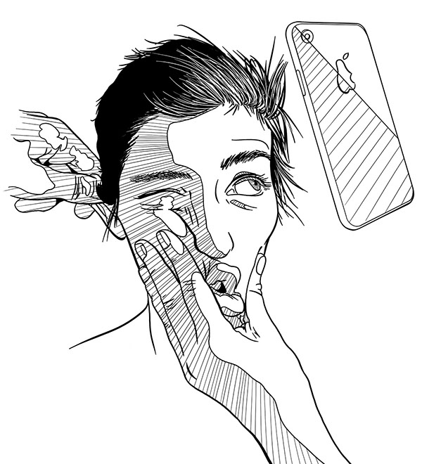
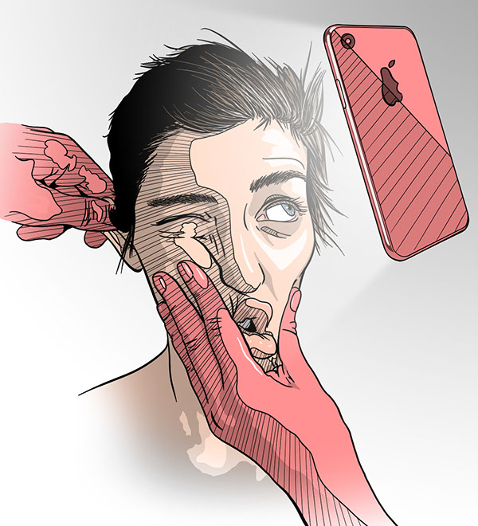
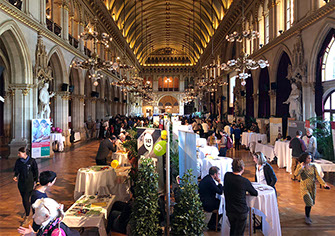
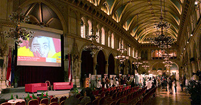
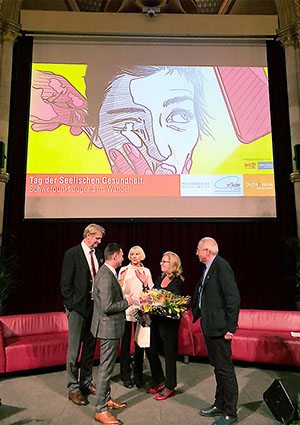

Tag der seelischen
Gesundheit 2018
Jährlich veranstaltet die Stadt Wien, zusammen mit dem KAV, den 'Tag der seelischen Gesundheit' (seit 2019 'Tag der psychischen Gesundheit') im Wiener Rathaus.
Das Thema des Kongresses 2018 waren die Probleme und Zwänge der Jungendlichen - die Posterillustration zeigt ein bewusst androgyn gestaltetes Gesicht, gequält von Leistungsdruck (ziehen am Ohr), Schönheitswahn (quetschen des Gesichts) und Darstellungszwang auf sozialen Medien (Handy).


